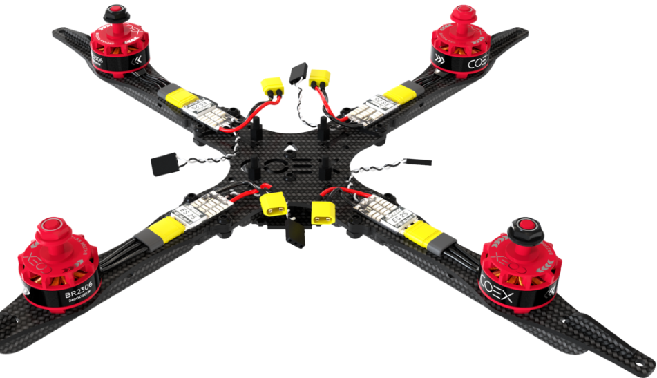
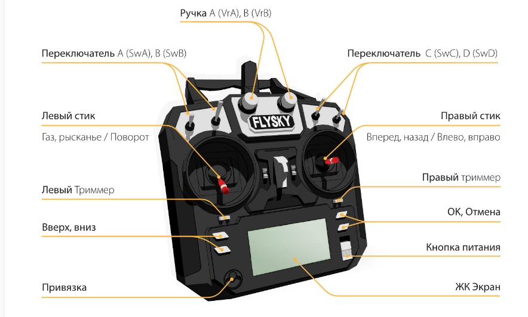

MAVLink — (Micro Air Vehicle Link)
Протокол обмена сообщениями между наземной станцией (Ground Control Station, а также её компонентами) и малыми беспилотными аппаратами (как летающими, так и ездящими, плавающими и т.д.) по радиоканалам. Обычно именно этот протокол используется для телеметрии.
Mavros
Библиотека-связующее звено между аппаратом, работающем по протоколу MAVLink, и ROS. Описание - http://wiki.ros.org/mavros
Dronekit — пакет программ для разработки приложений для бортового компьютера. Проект распространяется по модели СПО. Основной сайт - dronekit.io.
OpenCV — (Open Source Computer Vision Library) – набор бибилиотек компьютер
Полетный контроллер / автопилот
Прошивка - программное обеспечение, управляющее работой какого-либо устройства, например, полетного контроллера или регулятора мотора (ESC).
Бортовой компьютер — дополнительный вычислительный модуль для управления полётом БПЛА (управление полётным контроллером, ориентация в пространстве по изображению с камеры, управление автономным полётом). В УМК ЖУЖА в качестве бортового компьютера используется Raspberry PI.
Квадрокоптер - Беспилотный летательный аппарат с 4-мя винтами и электронной системой стабилизации.
Мультикоптер - Беспилотный летательный аппарат с электронной системой стабилизации и числом винтов, равным 3 (трикоптер), 4 (квадрокоптер), 6 (гексакоптер), 8 (октокоптер) или более.
Мотор - Электродвигатель, который вращает винты мультикоптера. Обычно используются бесколлекторные электродвигатели. Такие двигатели подключаются к ESC.
ESC / регулятор двигателя / "регуль" - Electronic Speed Controller. Специализированная плата, которая управляет скоростью вращения бесколлекторного электродвигателя. Управляется полетным контроллером при помощи широтно-импульсной модуляции (ШИМ).
ESC имеет прошивку, которая определяет особенности его работы.

АКБ / аккумулятор / батарея - Перезаряжаемый источник тока для БПЛА. В квадрокоптерах обычно применяются Li-po (литий-полимерные) аккумуляторы.
Ячейка / "банка" АКБ - Составная часть АКБ, непосредственный источник тока. Обычно АКБ для БПЛА состоят из нескольких (2–6) ячеек, соединенных последовательно. Максимальное напряжение одной Li-po ячейки – 4.2 В; общее напряжение АКБ равно суммарному напряжению ячеек. Количество ячеек обозначается буквой S, например: 2S, 3S, 4S. В Клевере обычно применяются аккумуляторы 3S.
Пульт / аппаратура радиоуправления / "аппа" - Пульт для управления квадрокоптером, работающий по радиоканалу. Для работы пульта к полетном контроллеру необходимо подключить ресивер. Клевером, также, можно управлять со смартфона.
Телеметрия
Арминг
Armed – состояние коптера готовности к полету. При поднятии стика газа либо при посылке внешней команды с целевой точкой – коптер полетит. Обычно коптер начинает вращать винтами при переходе в состояние "armed" даже если стик газа находится внизу. Противоположным состоянием является Disarmed
PX4
Популярный полетный контроллер с открытым исходным кодом, работающий на платах Pixhawk, Pixracer и других. PX4 рекомендуется для использования на Клевере.
Raspberry Pi
Популярный одноплатный микрокомпьютер, использующийся в конструкторе Клевер.
Образ SD-карты
Полная копия содержимого SD-карты, представленная в виде файла. Такой файл можно загрузить на SD-карту, воспользовавшись специальной утилитой, например Etcher. SD-карта, вставленная в Raspberry Pi является единственным его долговременным хранилищем и полностью определяет, что он будет делать. Конструктор Клевер включает в себя рекомендованный образ для SD-карты.
APM / ArduPilot
Полетный контроллер с открытым исходным кодом, изначально созданный для платы Arduino. Впоследствии был портирован на Pixhawk, Pixracer и другие платы.
UART
Последовательный асинхронный интерфейс передачи данных, применяемый во многих устройствах. Например, GPS антенны, Wi-Fi роутеры или Pixhawk.
IMU
Inertial measurement unit. Комбинация датчиков (гироскоп, акселерометр, магнитометр), которая помогает БПЛА рассчитывать ориентацию и положение в пространстве.
Estimation
Процесс определения ПО полетного контроллера состояния квадрокоптера: положения в пространстве, скоростей, углов наклона и т. д. Для этого используется смешивание данных с установленных датчиков и различные алгоритмы фильтрации, например фильтр Калмана.
В прошивке PX4 есть два модуля для estimation'а: LPE и ECL EKF (EKF2).
В прошивке APM эту функцию выполняет подсистема EKF2.
Пульт управления

jMAVSim
это простой мультироторный / квадроцикловый симулятор, который позволяет вам летать на транспортных средствах типа вертолетов под управлением PX4 по моделируемому миру. Он прост в настройке и может быть использован для проверки того, что ваш автомобиль может взлетать, летать, садиться и надлежащим образом реагировать на различные сбои (например, сбой GPS).
Одометрия
это использование данных с установленных на роботе сенсоров и датчиков для расчёта его текущего положения и ориентации в пространстве.
Энкодеры
датчики угла поворота.
Файл.dae
Файл .DAE - это файл, содержащий трехмерную графику. Он находится в текстовой форме с синтаксисом XML. Точнее, он реализует схему COLLADA, т.е. разработанную Autodesk COLLAborative Design Activity. Этот формат файла действует как передача и предназначен для обеспечения совместимости проектов САПР от разных производителей. Файл предлагает возможность интеграции с существующими проектами, а также запуск новых. Однако не рекомендуется изменять файл вручную.
Работу с файлами DAE поддерживают такие программные продукты, как Maya, 3ds Max, Blender, Unity, Torque 3D и другие.